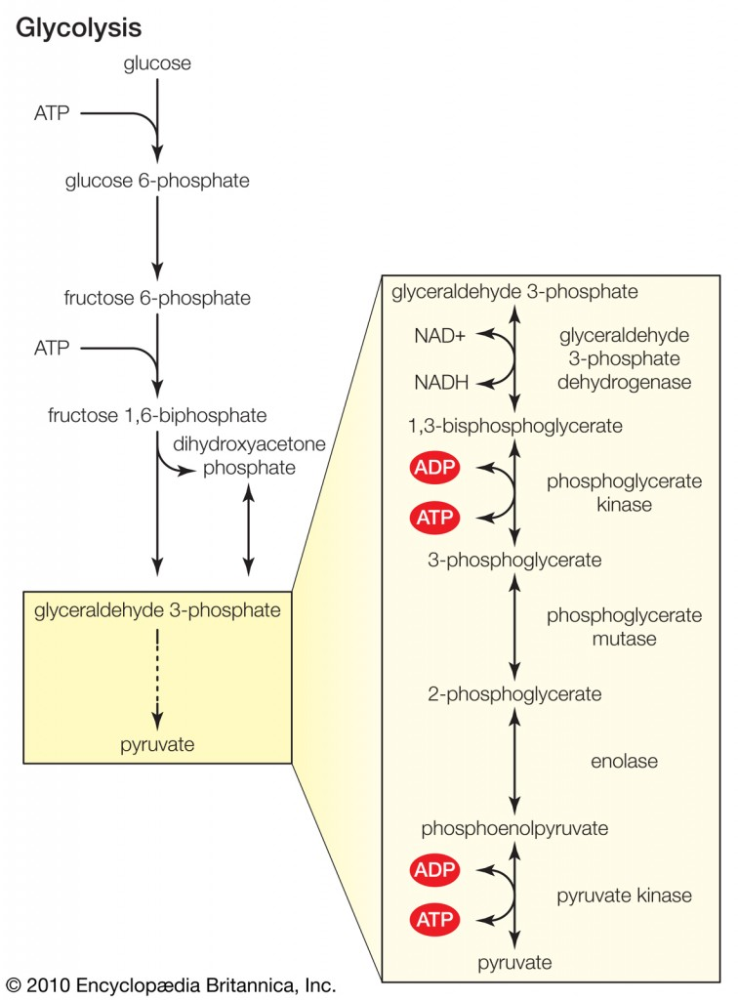
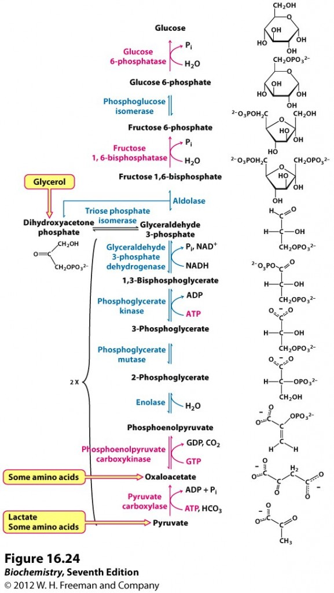
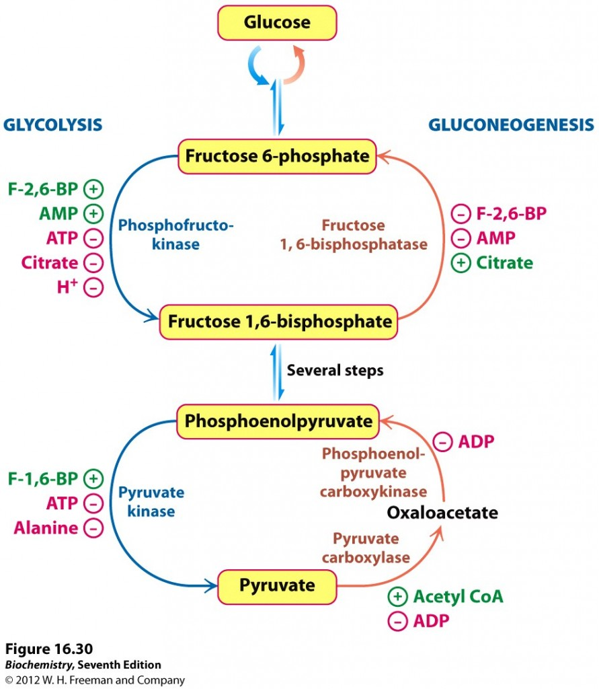

Tilbake til artikkelserien om metabolismen
Karbohydrater er et av de energigivende næringsstoffene, og finnes i kroppen hovedsakelig som glukose. Glukose er en viktig energikilde, og noen av kroppens celler er helt avhengig av dette molekylet. Prosessen som bryter ned glukose inni cellen kalles glykolyse. Vi kan også lage glukose selv, og denne prosessen kalles glukoneogenese. I denne artikkelen ser vi nærmere på disse to prosessene og hvordan de reguleres.
- Les om karbohydrater og hvordan de fordøyes og tas opp i denne artikkelen.
Glykolysen
Som nevnt i innledningen er glykolyse den prosessen som bryter ned glukose. Glykolysen har to formål med å bryte ned glukose, det første er å produsere ATP-molekyler og det andre er å produsere byggestener for å eksempelvis syntetisere fett- eller aminosyrer. Glykolysen foregår inne i den enkelte cellens cytosol, er delt inn i tre stadier og består av ti enzymatiske reaksjoner. Metabolisering av et glukosemolekyl gir to pyruvatmolekyler. I tillegg til pyruvat produseres det også to ATP-molekyler som kan benyttes som energi med en gang. Her er en skjematisk oversikt over glykolysen.

Stadie 1 - produksjon av fruktose-1,6-bisfosfat
Første stadie i glykolysen består av tre enzymatiske trinn, og endeproduktet er fruktose-1,6-bisfosfat.
Det første som skjer når et glukosemolekyl kommer inn i cellen er at det kobles på en fosfatgruppe, noe som gjør at vi får en forbindelse som heter glukose-6-fosfat (G6P). Dette skjer ved hjelp av enzymet hexokinase, og fosforyleringen av glukose har to hensikter. For det første kan ikke G6P krysse cellemembranen, siden glukosetransporterne ikke kan transportere det. For det andre destabiliseres glukosen slik at videre metabolisme er mulig.
G6P vil deretter omdannes til fruktose-6-fosfat, før det kobles på enda en fosfatgruppe ved hjelp av enzymet fosfofruktokinase, og vi får fruktose-1,6-bisfosfat (F-1,6-BP). Fram til nå har glykolysen vært energikrevende, noe som vises på figuren (vi har brukt to ATP-molekyler). Produksjonen av F-1,6-BP fullfører første stadie i glykolysen.
Stadie 2 - kløyving
I det andre stadiet kløyves F-1,6-BP ved hjelp av et enzym som heter aldolase til to trekarbonenheter, glyceraldehyd-3-fosfat (GAP) og dihydroacetonfosfat (DHAP). Av disse er GAP klar for å gå inn i glykolysens siste stadie der endeproduktet er pyrodruesyre, eller pyruvat. DHAP kan omdannes til GAP ved hjelp av enzymet triosefosfat isomerase, noe som gjør at for hvert glukosemolekyl som går inn i glykolysen ender vi opp med to pyruvatmolekyler.
Stadie 3 - produksjon av pyruvat
Det siste stadiet i glykolysen består av fem enzymatiske trinn, og for hvert GAP-molekyl som metaboliseres produseres det ett pyruvatmolekyl og to ATP-molekyler. Siden ett glukosemolekyl gav opphav til to GAP-molekyler vil dette stadiet gjennomføres to ganger for hvert glukosemolekyl. Siden vi allerede har brukt to ATP i første stadie er nettogevinsten to ATP-molekyler og to pyruvatmolekyler. Det neste avsnittet er komplisert, men figuren over gir en enkel skjematisk oversikt.
Den første reaksjonen i stadie tre omdanner GAP til 1,3-bisfosfoglyserat (1,3-BPG) ved hjelp av enzymet glyceraldehyd 3-fosfat dehydrogenase. Denne reaksjonen bruker niacin som kofaktor. 1,3-BPG har et høyt potensiale for å gi fra seg en fosfatgruppe, og i neste reaksjon overføres nettopp en slik til et ADP-molekyl, og det dannes et ATP-molekyl. Denne reaksjonen katalyseres av fosfoglycerat kinase, og den omdanner 1,3-BPG til 3-fosfoglyserat (3-PG). De to neste reaksjonene omdanner 3-PG til fosfoenolpyruvat (PEP). Den siste reaksjonen er omdanningen av PEP til pyruvat, og i denne reaksjonen dannes det andre ATP-molekylet. Denne reaksjonen er katalysert av enzymet pyruvat kinase.
Videre metabolisme av pyruvat
Dersom pyruvat ikke hadde blitt metabolisert videre ville glykolysen raskt stoppet opp. I begynnelsen av stadie 3 ble et NAD+-molekyl redusert til NADH, og for at glykolysen skal kunne gå sin gang må NAD+-molekylet regenereres. Dette skjer i den videre metaboliseringen av pyruvat, slik at det er metaboliseringen av pyruvat som tillater glykolysen å fortsette.
Pyruvat kan metaboliseres på tre ulike måter. I fravær av oksygen (anaerobt) kan pyruvat fermenteres til etanol eller melkesyre. Førstnevnte skjer i organismer som gjærsopp og noen andre mikroorganismer. Produksjon av melkesyre skjer i cellene våre når det ikke er nok tilgjengelig oksygen. Denne prosessen frigir to ATP-molekyler, langt mindre enn det som frigjøres med oksygen til stede. Når cellene har god tilgang på oksygen vil pyruvat fraktes inn i mitokondriene og metaboliseres videre til acetyl-CoA, som via sitronsyresyklusen og elektrontransportkjeden sørger for at det produseres mye energi. Et molekyl glukose kan maksimalt gi omtrent 30 ATP-molekyler dersom det oksideres på denne måten. Acetyl-CoA er også utgangspunktet for fettsyresyntesen, så for å omdanne et karbohydratoverskudd til fett må glukosen gjennomgå glykolysen.
Glukoneogenesen
Noen av kroppens celler er avhengig av glukose som energikilde, og derfor er vi også i stand til å produsere glukose selv fra andre substrater ved glukoneogenese. Karbohydrater er altså essensielt for kroppen, men vi trenger ikke nødvendigvis å spise dem for å overleve. Glukoneogenesen foregår hovedsakelig i cellenes cytosol, men de første trinnene foregår inni mitokondriene.
De viktigste molekylene som kan fungere som substrater for nydanningen av glukose er aminosyrer, hovedsakelig alanin fra nedbryting av muskelvev, glycerol fra nedbrytning av triglyserider og melkesyre (laktat) fra anaerob forbrenning av karbohydrater. Nedbrytning av aminosyrer kan gi pyruvat, oksaloacetat eller andre metabolitter i sitronsyresyklusen. Glycerol kan omdannes til DHAP, som omdannes videre til GAP og går inn i enten glykolyse eller glokoneogenese. Laktat omdannes til pyruvat i leveren ved hjelp av enzymet laktat dehydrogenase. Vi mennesker kan ikke produsere glukose fra fettsyrer, ettersom nedbrytningen fra fett gir acetyl-CoA, og vi har ingen enzymer som omdanner acetyl-CoA til et substrat som kan gå inn i glukoneogenesen.
Det er antatt at laktat bidrar til litt over halvparten av substratmengden som inngår i glukoneogenesen i den postabsorbtive fasen. Laktatet kommer først og fremst fra de cellene som baserer seg på anaerob forbrenning av karbohydrater, som røde blodceller og nyremargen. Under anaerob aktivitet produseres det også en del laktat i muskelcellene. Denne resirkuleringen av glukose kalles cori syklus.
Hele den glukoneogenetiske metabolismeveien starter med pyruvat og ender opp med glukose. Dette er det motsatte av hva som skjer i glykolysen, og flere av de enzymatiske stegene er akkurat de samme. Glukoneogenesen har noen særegne steg som er nødvendig for å komme rundt de irreversible stegene i glykolysen, noe som også er viktig for regulering av prosessen. Figuren under gir en skjematisk oversikt over glukoneogenesen, det er markert hvor i prosessen de ulike substratene kommer inn.

Det siste trinnet i glykolysen, der fosfoenolpyruvat omdannes til pyruvat, er irreversibelt. Glukoneogenesen kommer rundt dette problemet i to trinn. Først omdannes pyruvat til oksaloacetat, som er en intermediær metabolitt i sitronsyresyklusen. Dette skjer inne i mitokondriet ved hjelp av enzymet pyruvat karboksylase. For å fraktes ut av mitokondriet må oksaloacetat først omdannes videre til malat (et annet metabolitt i sitronsyresyklusen), som kan fraktes over mitokondriemembranen. Ute i cytosol redannes oksaloacetat og enzymet fosfoenolpyruvat karboksykinase omdanner det til PEP som vi kjenner fra glykolysen. Begge disse prosessene er energikrevende.
Reaksjonene fra PEP og opp til F-1,6-BP er identiske med det som ble beskrevet i glykolysen, og disse drives av hvilke metabolitter det er mest av. Det neste særegne steget i glukoneogenesen er omdanning av F-1,6-BP til F6P. Denne prosessen drives av enzymet fruktose-1,6-bisfosfatase, som spalter av en fosfatgruppe. F6P omdannes til G6P ved samme enzymer som ble brukt i glykolysen.
Det siste trinnet i glukoneogenesen er produksjon av fri glukose fra G6P. I de fleste vev stopper imidlertid glukoneogenesen ved G6P, og dette har en god grunn. Fosfatgruppen hindrer glukosemolekylet i å forlate cellen, slik at det for eksempel kan lagres som glykogen eller brukes som energi via glykolysen. Omdanningen til fri glukose skjer bare i de vevene som har som oppgave å regulere blodsukkeret. Dette gjelder hovedsakelig leveren, men også nyrene. Disse har et enzym, glukose-6-fosfatase, som spalter av den siste fosfatgruppen og dermed danner fri glukose som kan fraktes ut av cellen.
Regulering av glukosemetabolismen
Nedbrytning og nydanning av glukose skjer av praktiske grunner ikke samtidig inni en celle. Regulering av aktiviteten til nøkkelenzymene som katalyserer de irreversible stegene i begge prosesser sørger for dette. Det er først og fremst to reguleringssteder som bestemmer hvilken prosess som er aktiv og hvilken som er passiv, og den primære drivkraften er cellenes tilgang på energimolekylet ATP.
Det første reguleringsstedet er omdanningen mellom F6P og F-1,6-BP. I muskelvev er det først og fremst tilgangen på energimolekylet ATP, eller nærmere bestemt ratioen mellom ATP og AMP (oppbrukt ATP) som regulerer dette. Fosfofruktokinase, det primære kontrollenzymet i glykolysen, hemmes direkte av ATP, ved at ATP-molekyler kan binde til enzymet og deaktivere det. Når pH i cellen synker som følge av opphopning av sure metabolitter (spesielt under anaerob aktivitet), binder ATP sterkere til fosfofruktokinase, og aktiviteten synker enda mer. Også citrat, en metabolitt i sitronsyresyklusen, hemmer fosfofruktokinase. Høye nivåer av citrat aktiverer samtidig fruktose-1,6-bisfosfatase og aktiverer dermed glukoneogenesen.
Leveren er ansvarlig for å regulere blodsukkeret, så reguleringen her er litt mer kompleks. Høy tilgang på ATP vil også i leveren ha en hemmende effekt på fosfofruktokinase, men når tilgangen på glukose er stor som eksempelvis som følge av økt blodsukker så overstyres dette. Når konsentrasjonen av F6P øker og dette ikke metaboliseres videre til F-1,6-BP, så vil det i stedet dannes fruktose-2,6-bisfosfat (F-2,6-BP). Dette fører til en aktivering av fosfofruktokinasen slik at glykolysen fortsetter for å metabolisere glukoseoverskuddet. F-2,6-BP hemmer samtidig fruktose-1,6-bisfosfatase og stopper derfor glukoneogenesen. Dersom det er plass kan G6P lagres som glykogen, men om glykogenlagrene er fulle må glukosen metaboliseres for å lage byggeklosser til for eksempel fettsyresyntese for å lagre overskuddet som fett.

Det andre viktige reguleringsstedet er omdanningen mellom PEP og pyruvat. Glykolysen produserer pyruvat ved enzymet pyruvat kinase, mens glukoneogenesen bruker to enzymer, pyruvat karboksylase og PEP-karboksykinase, for å danne PEP. Igjen er cellens energistatus viktig, og høye nivåer av ATP eller alanin, som signaliserer at cellen har god tilgang på energi og byggestener vil hemme pyruvat kinase for å stoppe videre økning av disse. Høye nivåer av F-1,6-BP stimulerer pyruvat kinase for at de intermediære metabolittene i glykolysen ikke skal hopes opp. Dette understreker at det er fosfofruktokinase som er det viktigste enzymet som regulerer glykolysen. De glukoneogenetiske enzymene hemmes av ADP, som signaliserer at cellen har dårlig tilgang på energi. Det initielle steget i glukoneogenesen stimuleres når nivåene av acetyl-CoA øker, som er et tegn på at cellen har god tilgang på energi og byggestener.
Hexokinase er det første enzymet i glykolysen, og hemmes av sitt eget produkt, G6P/F6P. Når konsentrasjonene av G6P øker så er dette et signal om at cellen ikke har videre behov for glukose, verken til energiproduksjon eller lagring som glykogen. Når hexokinase da deaktiveres kan fri glukose fraktes ut igjen fra cellen og brukes andre steder. Hexokinasen i leveren hemmes også når G6P øker, men leveren har også et annet enzym, glukokinase, som ikke hemmes på denne måten. Dette gjør at når leveren tilføres mye glukose så fortsetter den å danne G6P. Dette kan enten lagres som leverglykogen, eller fortsette nedover i glykolysen for å danne byggestener til for eksempel fettsyrer. Fruktose-1-fosfat, en metabolitt i fruktosemetabolismen, stimulerer til økt aktivitet av hexokinase/glukokinase, og fruktose bidrar på denne måten til å øke aktiviteten i glykolysen.
Glykolysen og glukoneogenesen reguleres også hormonelt, hovedsakelig ved peptidhormonene insulin og glukagon som skilles ut som respons på blodsukkernivåene. Disse påvirker nøkkelenzymene gjennom å stimulere eller hemme gentranskripsjonen og dermed produksjonen av dem eller ved å stimulere/hemme fosforyleringskaskader som aktiverer/inaktiverer enzymene. Når blodsukkeret øker skiller vi ut insulin, som øker glukoseopptaket i cellene. Insulin stimulerer de glykolytiske enzymene fosfofruktokinase og pyruvat kinase, samt produksjonen av F-2,6-BP som ytterligere stimulerer glykolysen. Glukagon skilles ut som en respons på lavt blodsukker, og har motsatte effekter av insulin. Glukagon hemmer de tre glykolytiske enzymene og stimulerer PEP-karboksykinase og fruktose-1,6-bisfosfatase for å øke glukoneogenesen.
Kort oppsummert kan vi si at glykolysen aktiveres når cellene har behov for mer ATP og byggestener, mens glukoneogenesen aktiveres når tilgangen på disse er god. I leveren vil også blodsukkeret og tilgangen på glukose i stor grad spille inn på reguleringen, som derfor skiller seg litt fra det som skjer i muskelvev.
Artikkelen er sist oppdatert august 2013